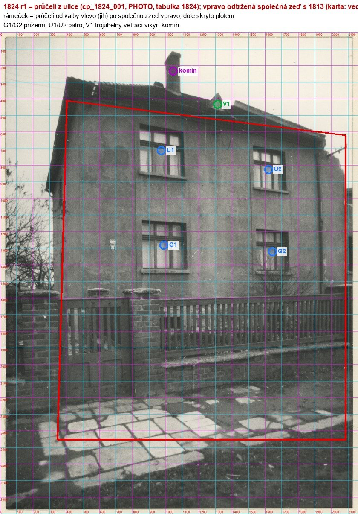
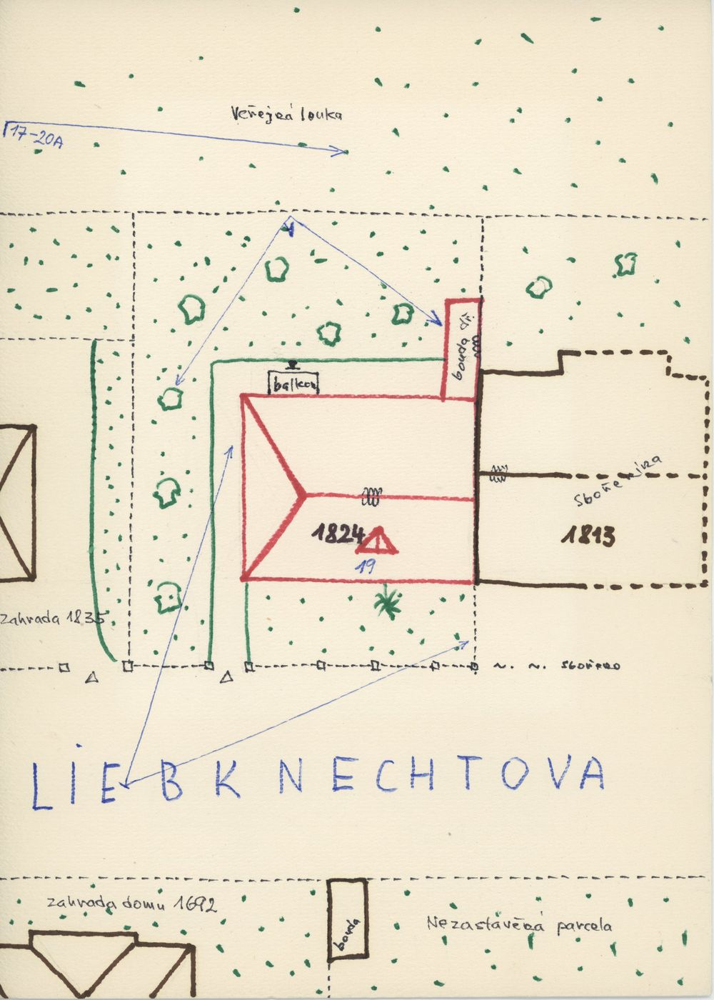
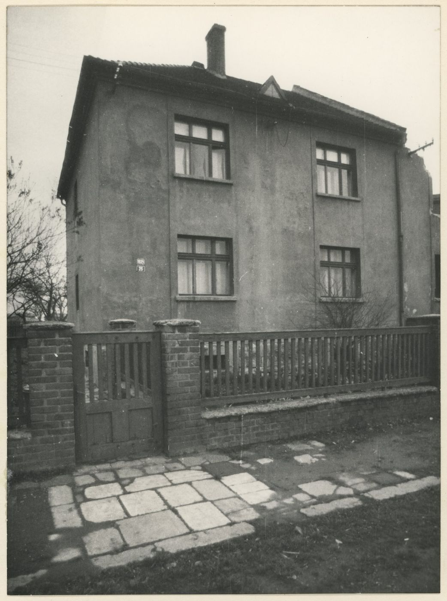
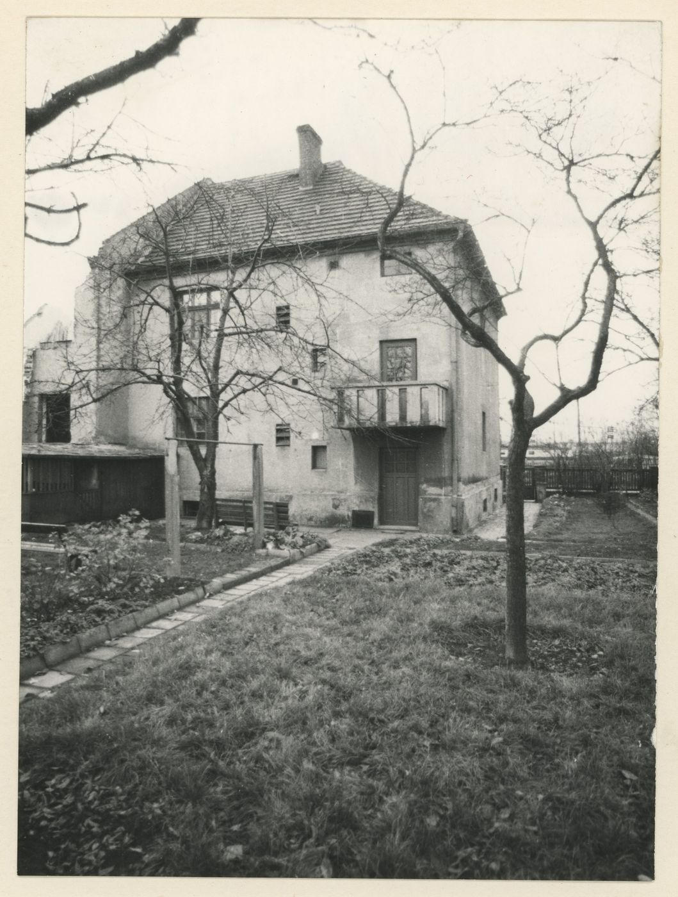
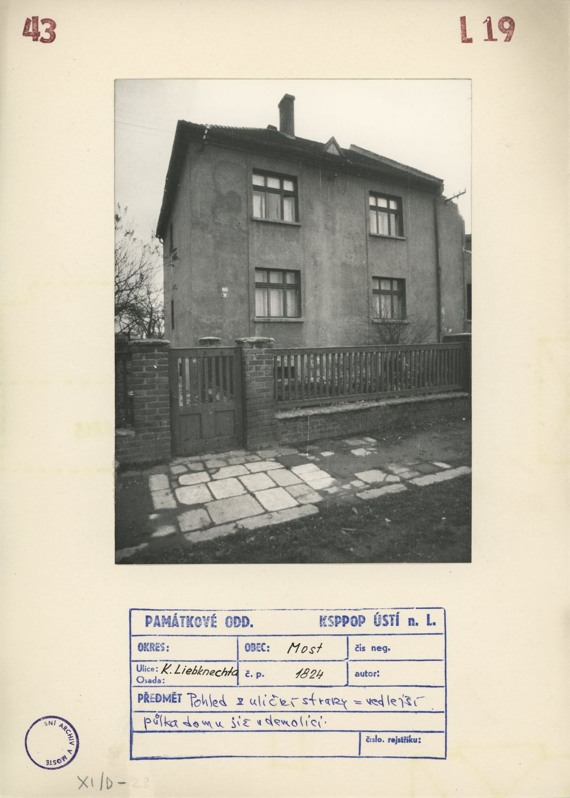
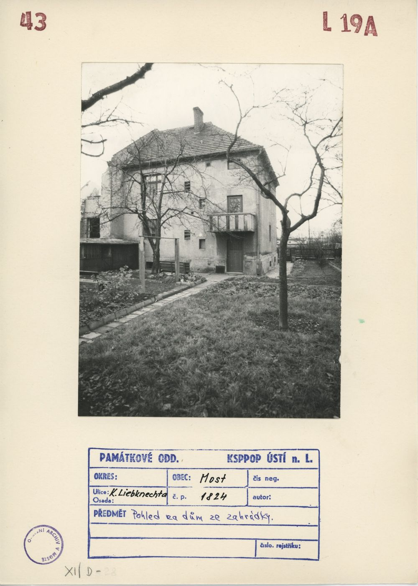
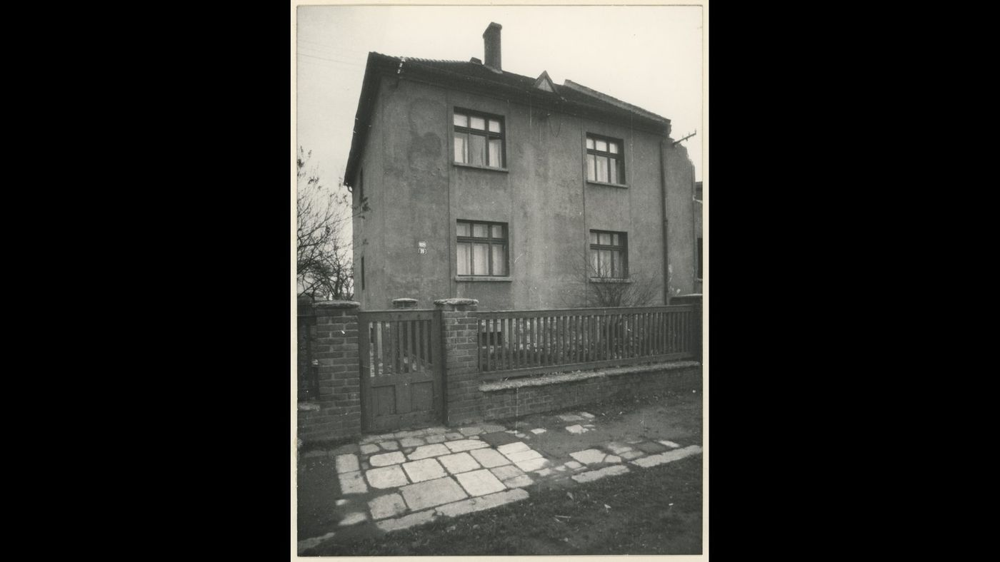
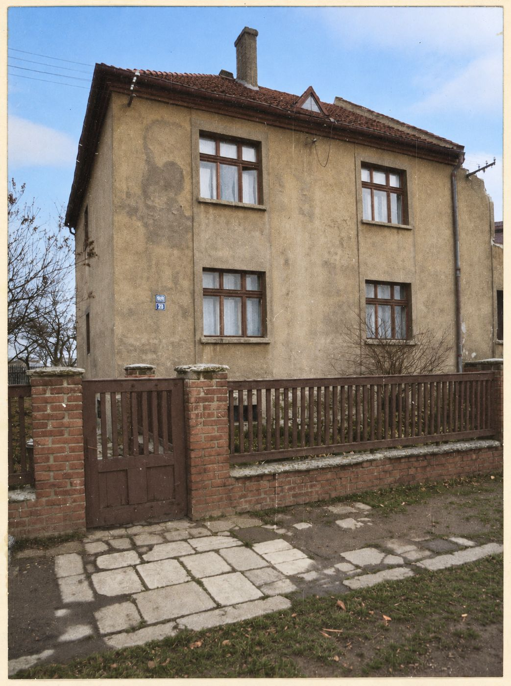
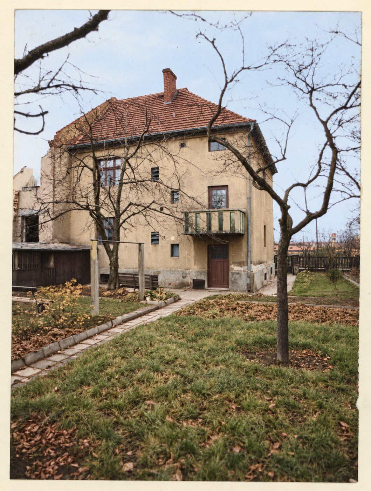

Identita domu
Upozornění – identita 1824 / 1784: Plán města 1938 zde tiskne čp. 1784, archivní karty a tabulka na domě čp. 1824 (viz kniha nesouladů). Fasáda je doložena fotografií, výšky jsou odhad.
GIS budovu 1568 vede pod čp. 1784; podle skic a karet KSPPOP jde o archivní čp. 1824, dochovanou polovinu dvojdomu s 1813.
Použité prameny: fotografie cp_1824_001/002, karty, skica; plán „1784“ (Strejcovi, parc. 442/1, 1932) k parcele nepatří.
Kde je dům na pramenech
Dům je v červeném rámečku, každý počítaný otvor nese ID z plánu modelu; sousedé jsou popsáni čísly. U domů jen z projektu je rámeček na výkresu pohledu.


Přílohy v databázi (8)
Všechny přílohy struktury 1824 v databázi Libuše, načtené 23. 10. 2026 (jen čtení) a otevřené. Kliknutím otevřete větší náhled.


plán / výkres
SHA-256 f6142a3b3856…


fotografie
SHA-256 df69302b02b6…


fotografie
SHA-256 53515430959a…


archivní karta
SHA-256 cc66a7561387…


archivní karta
SHA-256 a77725ae8e04…


odvozenina (kolorovaná / FRONT)
SHA-256 87159be3e914…


odvozenina (kolorovaná / FRONT)
SHA-256 8067eb4efa55…


odvozenina (kolorovaná / FRONT)
SHA-256 0570aa62fdfd…
Geometrie
Upozornění – identita 1824 / 1784: Plán města 1938 zde tiskne čp. 1784, archivní karty a tabulka na domě čp. 1824 (viz kniha nesouladů). Fasáda je doložena fotografií, výšky jsou odhad.
| Revize geometrie | r1 |
|---|---|
| Poloha | GIS půdorys id 1568 (ulice Rudolfova, GIS štítek čp. 1784) |
| Šířka průčelí | 10,45 m |
| Výška okapu | 6,70 m |
| Podlaží | 2 |
| Střecha podle pramenů | podle fotografie |
| Otvory / vikýře | 12 / 1 |
| Polygonů | 230 |
| Kontrola podkroví a střechy (brána) | prošla: vlasové zásahy 1, nekryté zdivo 0,00 m², střecha nad prázdnem 0,00 m²; fasáda: passed_partial |
Otvory po fasádách (facade_evidence)
| Fasáda | Okna po podlažích | Dveře | Počítané | Hypotéza | Pramen | Poznámka |
|---|---|---|---|---|---|---|
| main | [2, 2] | 0 | 4 | 0 | photo | 2 osy; výšky typ Barták |
| rear | [] | 0 | 0 | 8 | photo | zadní stěna: polohy z nerektifikované fotografie |
Kontrolní pohledy


Textury
bez textur (hypotéza – jen prosté materiály)
Až Codex dodá texturovaný model, objeví se v prohlížeči nahoře volba Textury (Codex).
Hypotézy
Upozornění – identita 1824 / 1784: Plán města 1938 zde tiskne čp. 1784, archivní karty a tabulka na domě čp. 1824 (viz kniha nesouladů). Fasáda je doložena fotografií, výšky jsou odhad.
Vše níže je model_hypothesis, provisional, locked: false.
- vysky podle typu Bartakovych domu (rez 1813: prizemi 2.80, patro 2.70) - fotografie z blizka nelze rektifikovat
- GIS bocni pristavek (2.0 x 6.2) na zadni fotografii neni - vynechan
- zadni otvory a balkon odhadem z nerektifikovane fotografie
Soubory
- Geometrie čp. 1824, GLB
- Pracovní model: F:\MOST\output\rudolfova_street_claude_2026-10-23\houses\cp1824\r1\cp_1824_G_r1.blend
- Plán modelu: F:\MOST\output\rudolfova_street_claude_2026-10-23\houses\cp1824\geometry_plan.json